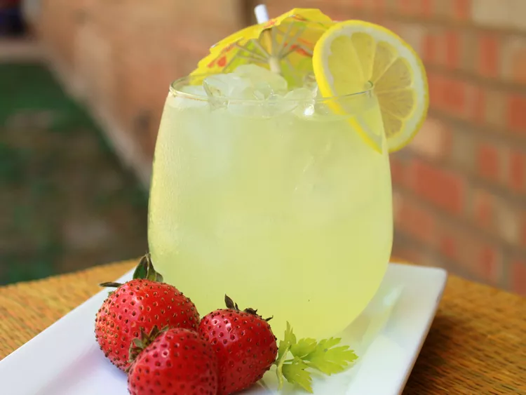

Home
Vintage Lemonade

Description
Your grandmas grandmas grandmas mothers lemonade.
Ingredients
- 5 lemons
- 1 1/4 cups white sugar
- 1 1/4 quarts water
Steps
- Peel the rinds from the 5 lemons and cut them into 1/2 inch slices. Set the lemons aside.
- Place the rinds in a bowl and sprinkle the sugar over them. Let this stand for about one hour, so that the sugar begins to soak up the oils from the lemons.
- Bring water to a boil in a covered saucepan and then pour the hot water over the sugared lemon rinds.
Allow this mixture to cool for 20 minutes and then remove the rinds.
- Squeeze the lemons into another bowl. Pour the juice through a strainer into the sugar mixture.
Stir well, pour into pitcher and pop it in the fridge! Serve with ice cubes.